Large language models (LLMs) are increasingly used to take action or augment human decision-making, yet most systems rely on parametric knowledge acquired by imitation, optionally supplemented with fixed data, retrieval, or search. However, this paradigm breaks down in novel domains and on sophisticated queries that cannot be answered from prior knowledge alone: knowing the laws of physics, for instance, does not by itself enable LLMs to answer queries about or complete long-horizon tasks in a complex physical system without explicit interactions in a physics simulator. Thus to solve such novel problems generally, agents should have the fundamental ability of active experimentation—to explore and gather targeted query-specific data or general principles about the unseen environments and to acquire new reusable skills by learning from these diverse interactions and experiences.
We thus introduce Hierarchical Experimentalist Agents (HExA), a novel in-context, experiment-centric self-improvement framework that (1) iteratively designs and refines query-relevant experiments; (2) incrementally learns from experiences a library of reusable and composable skills that accelerate experimentation within and across tasks; and (3) integrates the experimental data to effectively take actions or answer queries. Being entirely in-context and training-free, HExA can be used with any models, including black-box frontier models—enabling them to self-improve while co-evolving the skills using progress and efficiency rewards, interaction feedback from correct, incorrect, and partial rollouts, and experimental interventions, all without any reliance on offline data, oracle supervision, or external teacher guidance.
We also introduce InterPhyre, a 2D procedural physics simulation and embodied reasoning environment with additional tool-call and intervention APIs to enable agents to propose experiments and test hypotheses—designed to better evaluate and measure the ability of agents to learn from experimentation. On the hardest levels of InterPhyre, frontier models like Claude Sonnet 4.6 only achieve 2% success rate while HExA using experimentation-centric learning improves the same model to a maximum success rate of 77%. We also show similar improvements across all experiments with smaller open-weight models and over other agentic baselines like ReAct and Reflexion. The agent also achieves 44% success by not doing any active experimentation and using only skills that were learned and transferred from easier levels, demonstrating reusability and generalization. Our experiments show that current LLM agents still struggle in these settings, leaving a large room for improvement. HExA is a step toward scalable learning mechanisms that let agents learn through active experimentation and interaction while acquiring evolving skills, which remains a core challenge for building generalist agents.
InterPhyre is a 2D procedural physics benchmark built so that solving a task requires
interaction, not recall. In every level the agent places a red ball at (x, y, r); the
simulator then runs forward and checks a level-specific success predicate. The catch: outcomes depend on
contact chains, lever mechanics, and collision timing that cannot be read off a static scene
description — the agent must run experiments to discover them. The curriculum ships
25 levels × 10,000 pre-validated seeds = 250,000 certified task instances, plus a
snapshot/restore intervention API for paired counterfactual rollouts.
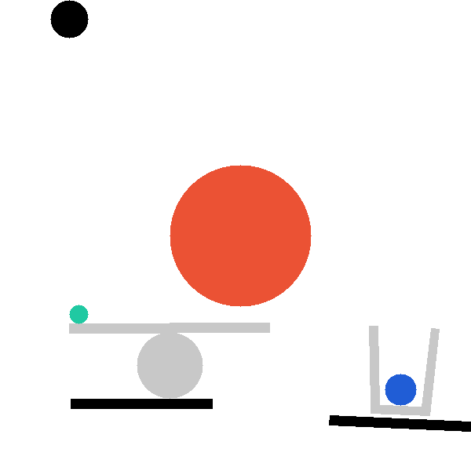
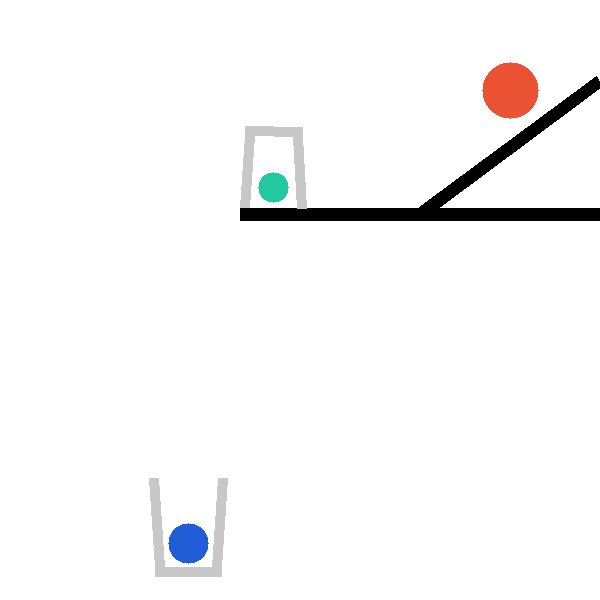
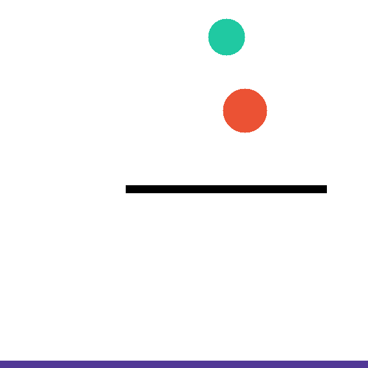
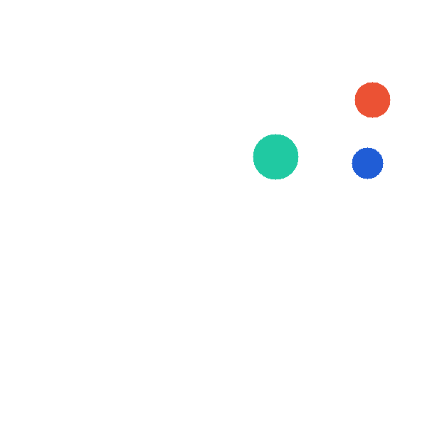
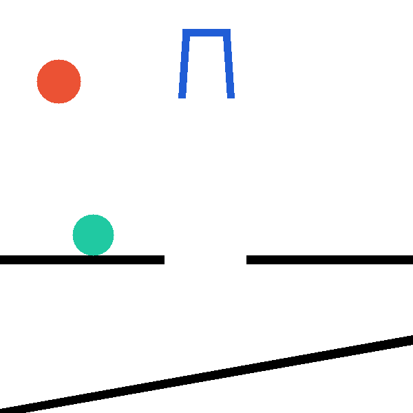
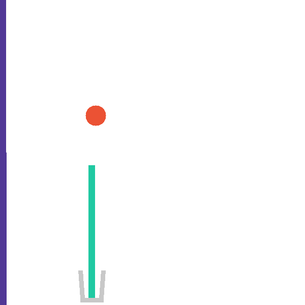
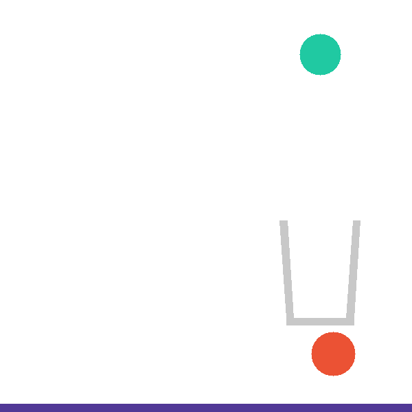
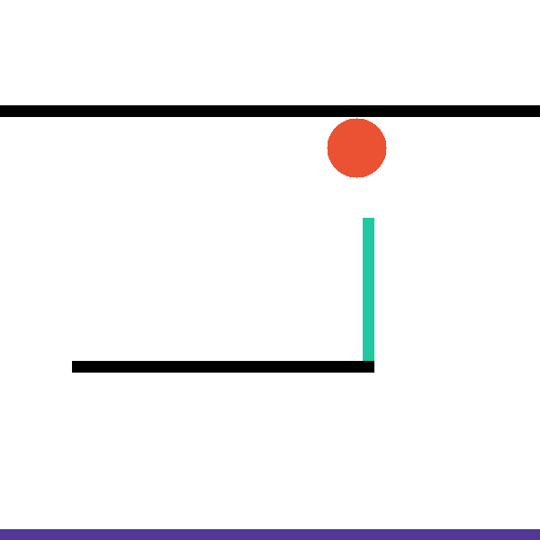
Each level exposes a structured tool surface the agent invokes directly, so that hypothesis testing is explicit and measurable. The catapult level, for example, exposes four complementary tools:
describe_scene_geometry()
# Strategy-neutral inventory: balls (pos, radius, dynamic),
# bars (centre, angle, length), baskets, key pairwise distances,
# and the success condition. A first-pass survey.
predict_first_contact(x, y, radius)
# Cheap pre-check (≤90 steps): which object the red ball hits
# first, the contact step, approach speed, point, surface normal.
trace_green_ball(x, y, radius)
# Lightweight probe: green ball's (x,y) waypoints every 30 steps
# plus start/end/peak summary. "Where does it go?"
simulate_with_trace(x, y, radius, object_names, stop_step)
# Full rollout: per-object kinematic extrema (peak_y, v_max,
# Δpos, angular speed) + up to 15 contact events.
finish(x, y, radius)
# Commit the final placement; environment scores the predicate.
Other levels add bespoke analysis tools — compute_intercept_setup() (falling_into_place),
compute_basket_analysis() (basket_case), get_ramp_center() (pass_the_parcel).
The same backend exposes a snapshot/restore primitive that branches a shared
mid-trajectory state into paired counterfactual rollouts (paper Figure 13).
HExA instantiates a two-agent architecture operating over a sequence of rounds. An actor generates trajectories by interacting with the environment through the tool-call interface; an evolver reads batches of trajectories and distils them into a natural-language skill bank; and a retriever injects the top-weighted skills and common mistakes into the actor's context at the start of each new episode. Each subsequent trajectory benefits from the accumulated experience of all prior ones — in-context reinforcement learning, where the policy improves through context augmentation rather than weight updates.
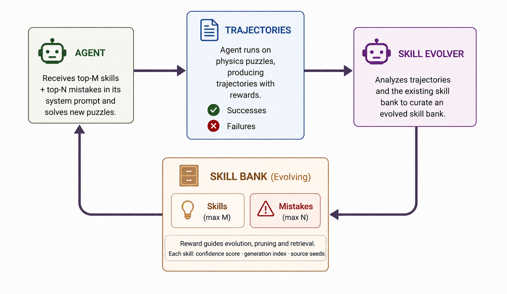
Each trajectory gets a scalar reward r(τ) ∈ [−1, +1] reflecting both outcome and efficiency — fast successes yield high-confidence strategies, while extensively-explored failures provide evidence for diagnosing mistakes. The evolver runs a two-pass distillation: first, contrastive skill extraction across the full batch (what distinguishes high-reward from low-reward trajectories); second, mistake and partial-skill extraction focused on the failure subset. Each skill carries a weight wk derived from the mean reward of its source trajectories.
Skills are hierarchical in two senses. First, they abstract many low-level tool calls into one high-level
principle (e.g. "when the ceiling–range tradeoff is unsolvable by radius tuning, shift x to
0.1–0.3" compresses dozens of (x, y, r) sequences). Second, skills are learned
while the agent already has access to earlier ones, so later skills build on earlier ones. The default
Off2On Evolving regime merges, revises, or prunes skills with each round's evidence; it
beats Iterative Replacement, frozen Offline banks, and Pure Online across every model and level tested.
Given source banks and a textual description of a target task, the evolver identifies structurally relevant skills, re-grounds them in the target task, and recalibrates their weights by how directly the principle transfers — enabling zero-shot transfer with no target-task trajectories. A transferred bank can also seed subsequent within-task refinement.
Catapult, seed 45. ReAct (no memory) exhausts its 25-iteration budget re-searching placements and never finds a working launch. HExA reuses skills distilled from earlier catapult episodes — it already knows how to launch (drop a heavy ball on the arm) and how to fix the usual failure (when the shot arcs too high and hits the ceiling, shift the drop point sideways to flatten it). After one ceiling overshoot it applies the learned correction and solves the level.
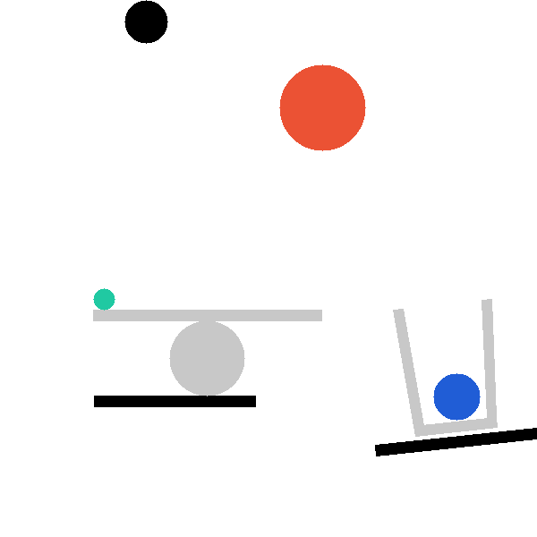
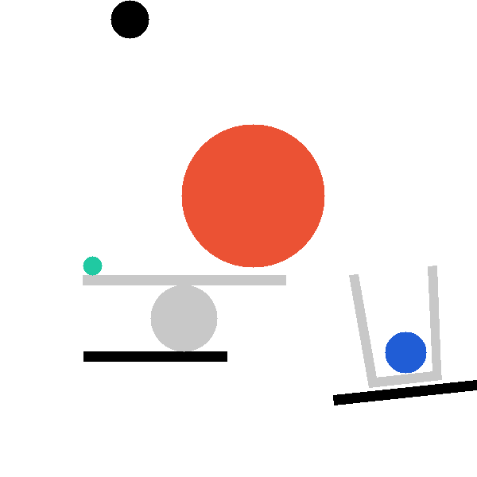
On the hardest levels, turning interaction traces into an evolving skill bank far outperforms ReAct, Reflexion, and a no-tool baseline — while using fewer iterations per episode.
Removing reward weighting from the evolver collapses much of the gain, showing the improvement comes from scoring and reusing skills, not merely interacting more.
The same mechanism lifts smaller open models, not just a strong frontier prior — the skill bank is a general in-context adaptation mechanism.
Banks synthesised from easier source levels solve an unseen harder level with no target-level experimentation, evidence the evolver extracts abstract physics primitives.
At a matched 50-seed budget, in-context HExA beats GRPO fine-tuning, because a discovered strategy is usable by the next episode immediately via context.
A 2D physics domain whose tasks can't be read off a static description, with a controllable difficulty range and a programmatic intervention API.
All methods are evaluated on the same 50 seeds per level (paired comparisons), under an identical 25-iteration harness, with HExA in its default Off2On Evolving configuration (x=3 seeds/round). HExA, HExA (no reward), and Reflexion report mean ± std over 3 runs.
catapult (Claude Sonnet 4.6, 50 seeds)| Method | Acc. (%) | Succ. | Fail | Avg Iter |
|---|---|---|---|---|
| Direct (one-shot, no tools) | 2.0 | 1 | 49 | 1.0 |
| ReAct baseline | 8.0 | 4 | 46 | 22.9 |
| Reflexion (K=2, 3 runs) | 21.3 ± 2.5 | 10.7 | 39.3 | 21.2 |
| HExA (no reward, 3 runs) | 50.7 ± 9.4 | 25.3 | 24.7 | 16.5 |
| HExA (Off2On Evol., 3 runs) | 67.3 ± 9.3 | 33.7 | 16.3 | 14.4 |
HExA reaches ~3× the strongest baseline (Reflexion) and uses the fewest iterations per solve.
On pass_the_parcel, the best HExA config reaches 60% vs. 24% (ReAct),
16% (Reflexion), 0% (Direct).
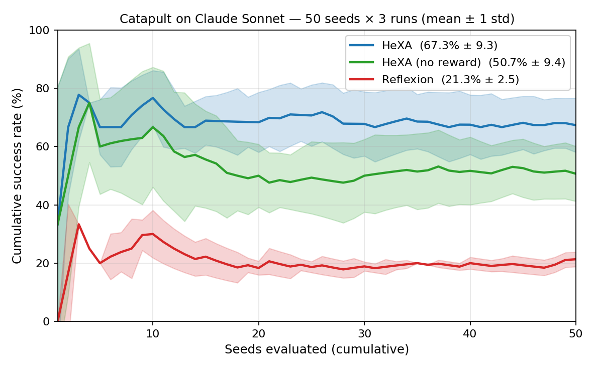
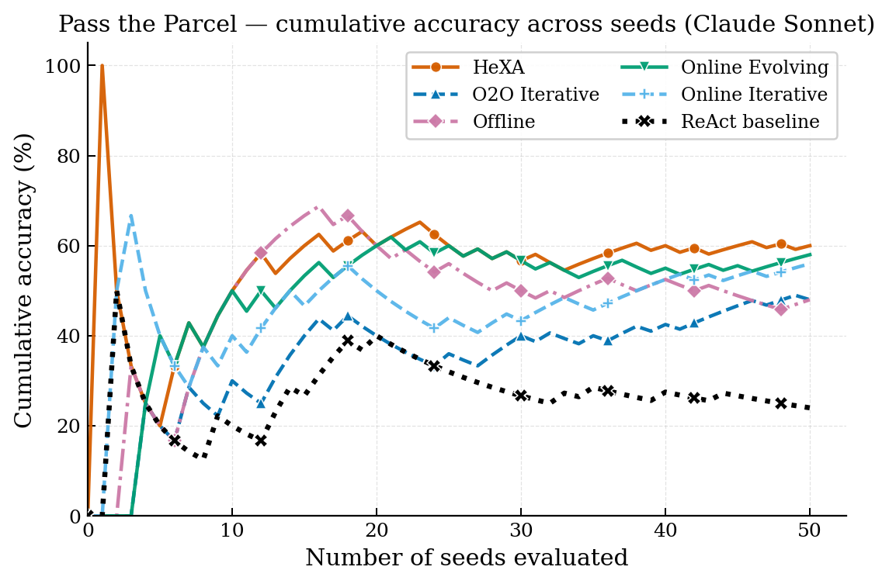
| Level | Method | Acc. (%) | Avg Iters | Δ |
|---|---|---|---|---|
| Down to Earth | ReAct baseline | 62.0 | 12.5 | — |
| HExA (no reward) | 64.0 | 14.8 | +2.0 | |
| HExA (reward-weighted) | 72.0 | 12.6 | +10.0 | |
| Two Body Problem | ReAct baseline | 18.0 | 22.2 | — |
| HExA (no reward) | 26.0 | 22.2 | +8.0 | |
| HExA (reward-weighted) | 34.0 | 18.9 | +16.0 |
| Level | Model | Baseline | HExA | Δ |
|---|---|---|---|---|
| Down to Earth | Qwen-2.5-3B | 8.0 | 24.0 | +16.0 |
| Down to Earth | Qwen-2.5-7B | 62.0 | 72.0 | +10.0 |
| Two Body Problem | Qwen-2.5-3B | 6.0 | 14.0 | +8.0 |
| Two Body Problem | Qwen-2.5-7B | 18.0 | 34.0 | +16.0 |
| Catapult | GPT-OSS-120B | 0.0 | 54.0 | +54.0 |
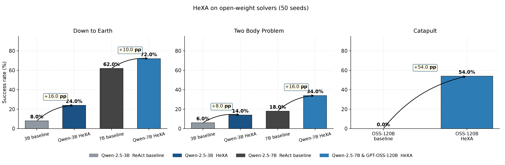
At a matched budget of 50 unique seeds, HExA beats GRPO fine-tuning: 24% vs 20% on down_to_earth and 14% vs 6% on two_body_problem. A strategy HExA discovers is usable by the next episode immediately via context, whereas GRPO must encode it into weights over many rollouts. With sufficient training, GRPO eventually catches up via direct reward optimisation.
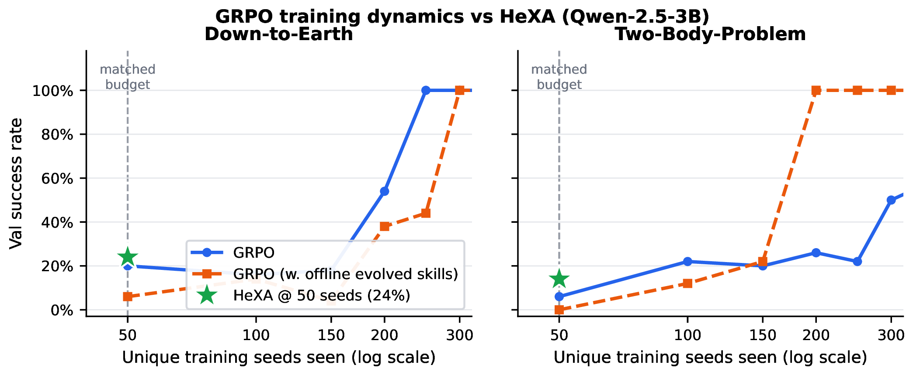
Do distilled skills encode genuine physics primitives or just level-specific recipes? We test this by synthesising a skill bank for a target level using only source-level banks and a one-sentence level description — no target-level trajectories at any stage.
| Target Level | Sources | Model | ReAct | Transfer | Δ |
|---|---|---|---|---|---|
| Catapult | DTE + TBP + PTP | Sonnet | 8.0% | 44.0% | +36 pp |
| Falling Into Place | DTE only | Qwen-7B | 20.0% | 32.0% | +12 pp |
| Two Body Problem | DTE only | Qwen-7B | 18.0% | 34.0% | +16 pp |
Transfer is positive in every case. No target-level trajectories are seen at any stage.
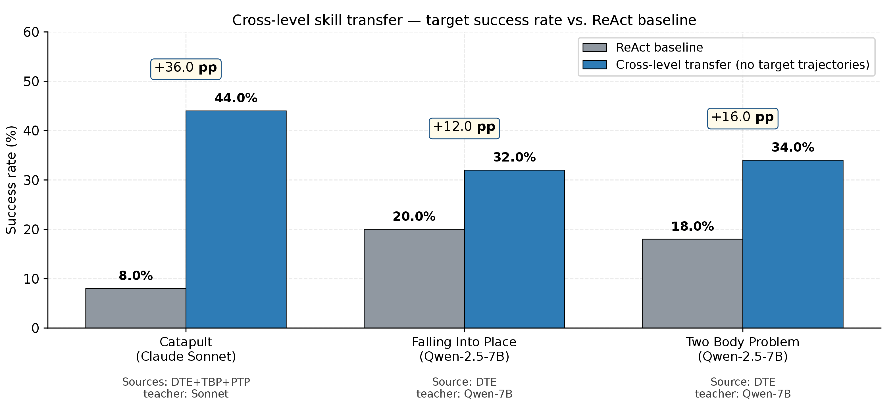
The skill bank is HExA's central artifact: a compact, human-readable set of physics principles
and common mistakes, each weighted by the reward of the trajectories it was distilled from.
Below are real entries from a round-14 catapult bank (paper Appendix E.4).
Principle. Placing the red ball at x=0.5 on the catapult arm produces a consistent rightward launch arc; only deviate to x=0.3 when a ceiling hit is observed.
Applicability. Always, as the first placement attempt.
Coordinate example. (0.5, 0.4, 1.5)
Principle. If adjusting the ball radius cannot simultaneously clear the ceiling-blocker and reach the basket, move the drop point sideways (x → 0.1–0.3) to flatten the launch arc instead of adding force.
Note. This single principle compresses many distinct (x, y, r) tool-call sequences — an example of hierarchical abstraction.
Description. The agent micro-tunes x/y/r around the same narrow region instead of exploring alternatives.
Root cause. The arm is the most obvious mechanism, so failures are met with small perturbations.
Corrective. After 2 failures within x ± 0.2, move to a completely different x zone.
PROVIDE: more skill/mistake entries from your evolved banks (any level) to populate this section.
Each entry is one <details class="skill"> block — copy the pattern above.
@article{hexa2026,
title = {HExA: Hierarchical Experimentalist Agents},
author = {Abhranil Chandra and Sankaran Vaidyanathan and Utsav Dhanuka and Varun Gandhi and Scott Niekum},
year = {2026}
}